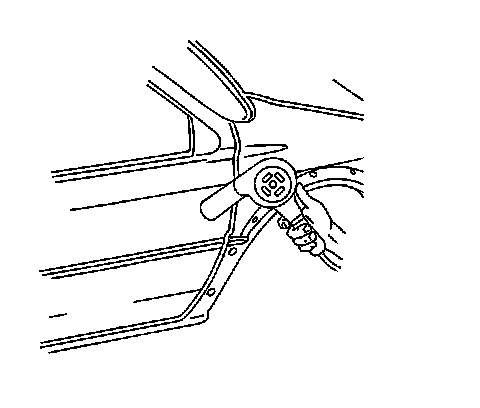
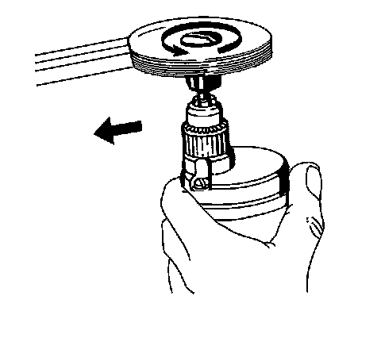
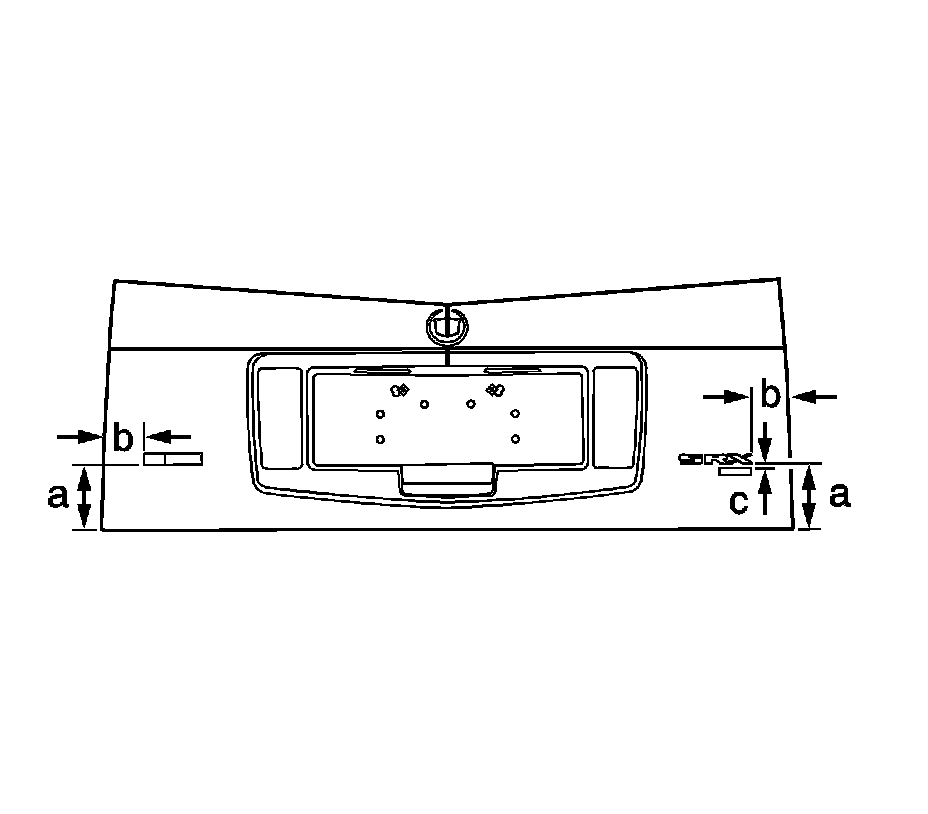
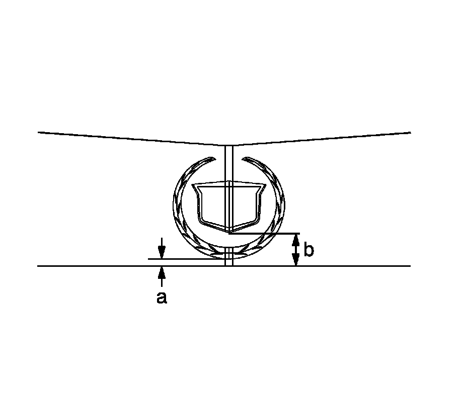

Liftgate Emblem and Nameplate Replacement
Liftgate Emblem and Nameplate Replacement
Tools Required
J 25070 Heat Gun
Removal Procedure
Important: Apply the tape for protection and alignment marks for alignment of the new emblem/nameplate.
1. Apply the tape to the area around the emblem/nameplate.

2. Using J 25070 heat the emblem/nameplate. Apply the heat using a circular motion for about 30 seconds holding the heat gun 152 mm (6 in) from the surface.
3. Remove the emblem/nameplate from the surface using a small plastic flat-bladed tool, being careful not to damage the paint.
4. When replacing a emblem/nameplate, remove all adhesive as follows:

* For body panels, use a 3M(TM) Scotch Brite molding adhesive remover disk 3M(TM) P/N 07502 or equivalent.
* For plastic panels, use a lint-free cloth and Varnish Makers and Painters (VMP) naphtha or a 50/50 mixture by volume of isopropyl alcohol and water to remove the adhesive.
Installation Procedure
Important: Apply the emblem/nameplate in an environment that is free from dust or other dirt that could come into contact with the sticky backing. Foreign material may cause improper adhesion.
1. Ensure the area where the emblem/nameplate will be installed is clean and dry.

2. If the location of the emblem/nameplate has not been marked, apply tape and use the following dimensions:
* a - 130 mm (5.12 in) from the horizontal edge of the liftgate
* b - 80 mm (3.12 in) from the vertical edge of the liftgate
* c - Export unit only - 12 mm (0.5 in) from the bottom edge of the "SRX" emblem

3. If the location of the emblem has not been marked, apply tape and use the following dimensions:
* a - 5 mm (0.2 in) from the horizontal top edge of the liftgate applique
* b - 23 mm (0.9 in) from the horizontal top edge of the liftgate applique
4. Using J 25070 if necessary, heat the mounting surface to approximately 27-41°C (80-105°F).
5. Ensure that the temperature of the emblem/nameplate is approximately 29-32°C (85-90°F).
Important: Do not touch the adhesive backing of the emblem/nameplate.
6. Remove the protective liner from the back of the emblem/nameplate.
7. Position the emblem/nameplate to the location marks and press the emblem/nameplate to the mounting surface.
8. Apply equal pressure along the emblem/nameplate to uniformly bond the item to the mounting surface.
9. Inspect the emblem/nameplate for bonding. Hand roll loose ends.
10. Remove the tape from the mounting surface.